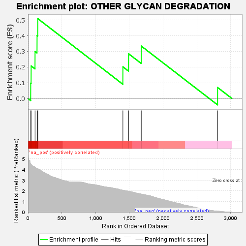
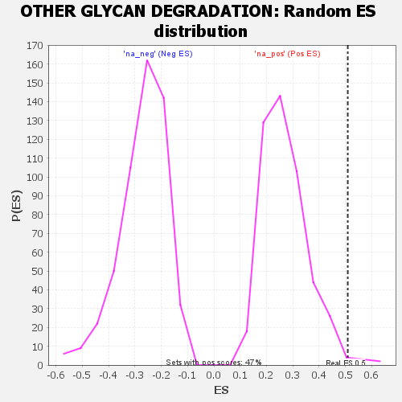

| | | Dataset | GSEA RNK clr Maaslin2 MucosalvsLuminal KO - Cecum.rnk |
| Phenotype | NoPhenotypeAvailable |
| Upregulated in class | na_pos |
| GeneSet | OTHER GLYCAN DEGRADATION |
| Enrichment Score (ES) | 0.50905937 |
| Normalized Enrichment Score (NES) | 1.8725848 |
| Nominal p-value | 0.010593221 |
| FDR q-value | 0.042333037 |
| FWER p-Value | 0.412 |
Table: GSEA Results Summary

Fig 1: Enrichment plot: OTHER GLYCAN DEGRADATION
Profile of the Running ES Score & Positions of GeneSet Members on the Rank Ordered List

Fig 2: OTHER GLYCAN DEGRADATION: Random ES distribution
Gene set null distribution of ES for OTHER GLYCAN DEGRADATION